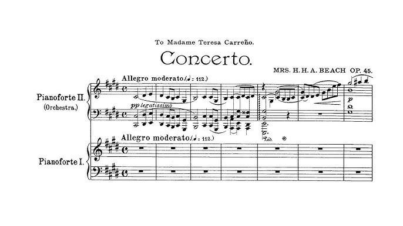

Amy Marcy Cheney Beach rođena 5. Rujna 1867. Godine u Hennikeru, New Hampshire, bila je američka skladateljica i pijanistica. Postala je prva uspješna američka skladateljica umjetničke glazbe velikih razmjera.
Amy je rođena u uglednoj novoengleskj obitelji. Njezina majka, Clara bila je talentirana amaterska pjevačica I pijanistica. Mlada Amy bila je pravo čudo od djeteta koja je u dobi od jedne godine naučila napamet četrdeset pjesama, a u dobi od tri godine sama je naučila čitati. Svirala je četveroglasne himne i skladala jednostavne valcere s četiri godine. Sa šest godina počela je učiti klavir s majkom i godinu dana kasnije izvela je svoje prve javne recitale, svirajući djela Handela, Beethovena, Chopina i neka svoja djela.
Od 1875. Studirala je u Bostonu s vodećim pijanistima svoga vremena.
Amy Cheney debitirala je sa šesnaest godina 18. listopada 1883. na "Promenade Concert" pod ravnanjem Adolpha Neuedorffa u bostonskoj Music Hallu, gdje je svirala Chopinov Rondo u E - svolu i bila klavirska solistica na Moschelesovom klaviru koncert br. 3 u g-molu.
Godine 1892. Beach je postigla svoj prvi zapaženi uspjeh kao skladateljica izvedbom svoje Mise u E-slomu u Bostonskom društvu Handel i Haydn. Postala je prva Amerikanka koja je postigla široko priznanje kao skladateljica velikih djela s orkestrom. Beachin nacionalni ugled porastao je zahvaljujući njezinoj jednako dobro prihvaćenoj Simfoniji, op. 32; Sonata za violinu, op. 34; i klavirski koncert, op. 45.
Amy se udala 1885. Godine za dr. Henryja Harrisa Auberya Beacha, bostonskog kirurga, predavača na Harvardu i pjevača amatera dvadeset četiri godine starijeg od nje (imala je osamnaest godina u to vrijeme). Njezino će ime kasnije biti navedeno na koncertnim programima i objavljenim skladbama kao "Mrs. HHA Beach."
Nakon suprugove smrti 1910., Beach je otplovila u Europu kako bi tamo stekla reputaciju i kao izvođačica i kao skladateljica. Dobila je oduševljene kritike za recitale u Njemačkoj te za svoju simfoniju i koncert koji su izvedeni u Leipzigu i Berlinu. Vratila se u SAD 1914., gdje je zimi koncertirala, a ljeti skladala. Godine 1921. postala je stipendistica MacDowell Colony u Peterboroughu, New Hampshire, gdje je skladala većinu svojih kasnijih djela.
Kasnije u životu provela je većinu godina skladajući u MacDowell Colony, a ostatak godine uglavnom u New Yorku i svom domu u Cape Codu u Centervilleu, Massachusetts. Nakon smrti ostavila je više od 300 objavljenih djela, a više je njezinih pjesama objavljeno u posljednjim desetljećima.
Nakon njezine smrti 27. prosinca 1944., Beachina autorska naknada predana je koloniji MacDowell, kako je propisano u njezinoj oporuci.
Galsku simfoniju ili simfoniju u e-molu, op. 32 napisala je Amy Marcy Cheney Beach, 1894. godine; bila je to prva simfonija koju je skladala i objavila američka skladateljica. Djelo je debitiralo u Bostonu u petak, 30. listopada 1896. uz "javno i novinarsko priznanje". Beach je crpio inspiraciju za veliko orkestralno djelo iz jednostavnih starih engleskih, irskih i škotskih melodija; tako je djelo podnaslovila 'Galski'.
U skladu s tradicijom koja prolazi kroz Haydna, Mozarta, Beethovena, Schumanna I Brahmsa, simfonija je podijeljena u četiri kontrastna stavka. Uz punu romantičnu harmonijsku strukturu i pogled na horizonte moderne glazbe, Beachina Galska Simfonija izdvojila ju je kao istaknutu skladateljicu na prijelazu u dvadeseto stoljeće.
Ovu skladbu izvode: 2 flaute, pikolo, 2 oboe, engleski rog, 2 klarineta, bas clarinet, 2 fagota, 4 roga, 2 trube, 3 trombona, tuba, timpan, trokut, gudači (3 violine, viola, čelo…)
Četiri stavka simfonije su:
I. Allegro con fuoco
- Simfonija počinje tihom kromatskom tutnjavom u žicama koja daje osnovu na kojoj se gradi romantična melodija
- Bogata orkestracija uspostavlja romantični stil simfonije
- Prvi stavršava impresivnim sažetkom glavnih tema
II. Alla siciliana – allegro vivace
- Galske teme uvode se u varijacijama
- Živahni stavak ima gracioznu temu koja se pojavljuje u različitim oblicima
- Irska melodija čuje se na oboi u laganom ljuljajućem tempu, nakon čega se tempo glazbe povećava
III. Lento con molto espressione
- Treći je stavak melodičan i spor
- Ovaj stavak je u obliku sonate te se sastoji od dvije irske pjesme
- Obje su teme vrlo opširno razvijene
-
IV. Allegro di molto
- Posljednji stavak također je u obliku simfonije
- Sastoji se od dvije teme koje se temelje na originalnim Amynim temama iz prvog stavka
- vraća se na melodiju iz prvog stavka te ovdje dobiva još dramatičniji izraz
Galska simfonija bila je prvo američko simfonijsko djelo koje uključuje anglo – američke narode, što je bila prekretnica u to vrijeme. Beach, koja je odrasla u Bostonu okružena galskim zajednicama, skladala je simfoniju kako bi pokazala njezine vještine, ali i tradiciju galske melodije, koja je zaista nešto posebno.

Galska simfonija jedna je od lijepših američkih simfonija. Eksperimentiranje s glazbenim stilovima (simfonija kombinira elemente romantizma i impresionizma) te istraživanje različitih glazbenih stilova i tehnika potaknulo je divljenje i zanimanje za Beachina ostala djela. Smatram Galsku simfoniju važnom povijesnom simfonijom jer je napisana od strane američke žene, koje u to doba nisu imale velika prava, ali se Amy izborila za svoje ime te probila stereotipe i postala jedna od važnijih skladateljca današnjice.
Galski jezik spada u keltske jezike koji se u Škotskoj govore više od 1500 godina, važan je dio škotske baštine I kulturnog identiteta. Danas je galski jezik, jedan od jezika koji umire, zbog mnogih izvornih govornika koji danas više nisu sa nama. Današnje generacije nisu našle zanimaciju, ali I potrebu učiti galski. No međutim, neki u Škotskoj pokušavaju održati jezik na životu kroz projekt rječnika.